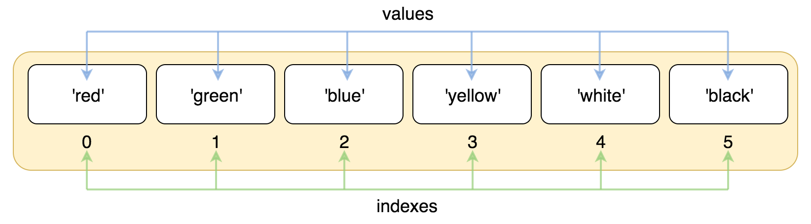
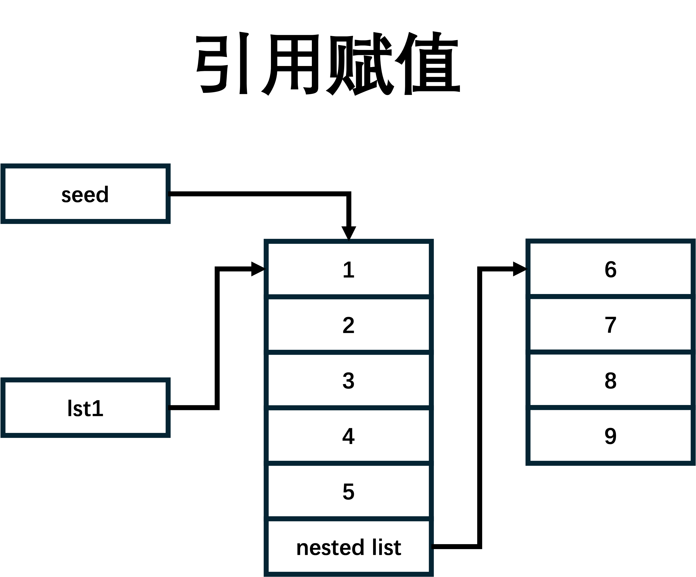
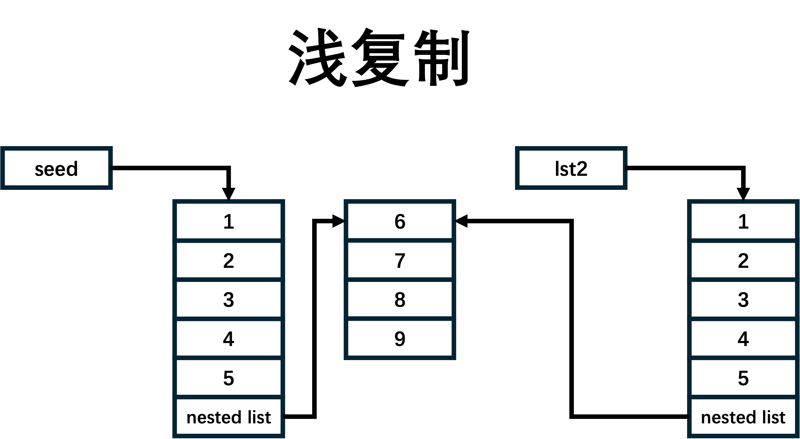
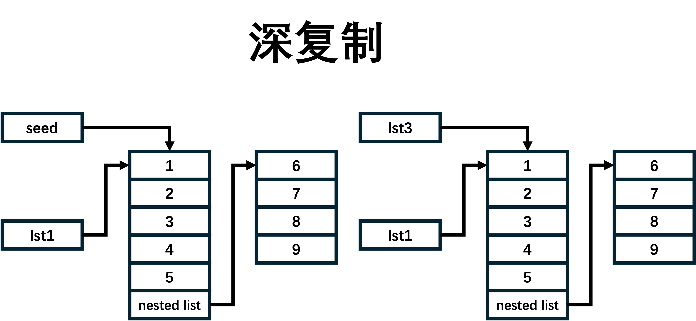

列表 List
Python中的列表List是一种非常重要和常用的数据结构，它允许我们存储和操作多个元素。在Python中，列表是一种有序的序列，可以包含任意数量的元素，并且可以动态地改变大小。列表是Python中最灵活、最常用的数据类型之一，几乎在每个Python程序中都会被广泛应用。
基本操作
创建列表
在Python中，可以通过简单的方括号[]来创建一个列表，并在其中放入多个元素，元素之间用逗号,分隔。例如：
>>> my_list = [1, 2, 3, 4, 5]
上述代码创建了一个名为my_list的列表，其中包含了整数1到5。列表中的元素可以是任意类型的对象，也可以是不同类型的对象的组合，甚至可以是另一个列表。例如：
>>> mixed_list = [1, 'apple', True, [5, 6, 7]]
这个列表中包含了一个整数、一个字符串、一个布尔值和一个内嵌列表。Python的列表是可以嵌套的，也就是说一个列表可以包含另一个列表作为其元素。
索引
与字符串一样，列表也可以从正反两个方向来索引
比如：
lst = ['red', 'green', 'blue', 'yellow', 'white', 'black']
正向索引： 
反向索引:

>>> print(lst[0])
red
>>> print(lst[-2])
white
同样列表也不能越界访问其中的元素：
>>> print(lst[10])
Traceback (most recent call last):
File "<pyshell#3>", line 1, in <module>
print(lst[10])
IndexError: list index out of range
切片
与字符串一样，列表也可以进行切片，所用的运算符也是[], 它的语法与字符串类似：
list_name[start:stop:step]
```python
>>> numlst = [1,2,3,4,5,6,7,8,9,10]
>>> numlst[1:4]
[2,3,4]
>>> numlst[6:] #切片从索引6开始，切到最后
[7,8,9,10]
>>> numlst[::2]
[1,3,5,7,9]
列表的切片结果还是列表
通常情况下，切片时，stop的值要大于start的值，否则切片结果为一个空列表[]。
但也有例外，如果设置了步长step为负数，那么stop的值一定要小于start的值，如：
>>> numlst[5:2:-1]
[6, 5, 4]
成员运算
成员运算可以用在Python中所有的数据结构中，语法一致：
>>> lst = [1, 2, 3, 4, 5]
>>> 1 not in lst
False
修改列表
可以通过索引和切片来修改列表的元素值：
>>> numlst = [1,2,3,4,5,6,7,8,9,10]
>>> numlst[0] = 100
>>> print(numlst)
[100,2,3,4,5,6,7,8,9,10]
>>> numlst[1:4] = ['a','b']
>>> print(numlst)
[100,'a','b',5,6,7,8,9,10]
这里提到的修改只是修改这个列表里的内容，不会改变列表的对象。
删除列表里的值
与字符串不同的是，我们可以调用del关键字来删除列表里的元素，或者一段切片。
>>> numlst = [1,2,3,4,5,6,7,8,9,10]
>>> del numlst[0]
>>> print(numlst)
[2,3,4,5,6,7,8,9,10]
>>> del numlst[1:4]
>>> print(numlst)
[1,5,6,7,8,9,10]
>>> del numlst #删除整个列表
列表的加法运算
列表的加法运算只能发生在两个列表之间，不能与其它类型进行加法运算。
>>> lst1 = [1,2,3]
>>> lst2 = [4,5,6]
>>> print(lst1 + lst2)
[1,2,3,4,5,6]
>>> lst3 = lst1 + lst2
列表的乘法运算
列表的加法运算只能发生在列表和整型之间，不能与其它类型进行乘法运算。
>>> lst1 = [1,2,3]
>>> print(lst1 * 2)
[1,2,3,1,2,3]
>>> lst3 = lst1 * 2
遍历列表
用for循环可以对那些可迭代的对象进行遍历，主要有两种方式：
索引遍历
lst = [1,2,3,4,5,6,7,8,9,10]
for j in range(len(lst)):
print(lst[j])
这种方式通过索引来访问列表中的元素。j 在每次循环中都被赋值为列表的下一个索引，然后使用这个索引来从列表中获取元素。这种方式在处理简单元素（如整数或字符串）的列表时，由于需要额外的索引查找，可能会比第一种方式稍慢一些。
直接遍历
lst = [1,2,3,4,5,6,7,8,9,10]
for i in lst:
print(i)
这种方式直接遍历列表中的每一个元素。i 在每次循环中都会被赋值为列表 lst 的下一个元素。这种方式更简洁，并且当列表的元素是复杂对象（如字典或自定义类的实例）时，效率更高。
函数
| 名字 | 说明 |
|---|---|
len | 有返回值，返回列表的长度 |
min | 有返回值，返回列表中最小的字符 |
max | 有返回值，返回列表中最大的字符 |
方法
内容查找
| 方法 | 说明 |
|---|---|
count | 统计在列表中某个元素出现的次数 |
index | 查找在列表中某个元素的位置 |
count(value)
count 返回在列表中有几个value
>>> lst = [2,3,4,65,1,34,5,2,5,7,10]
>>> lst.count(5)
2
index(value, start=0, stop)
列表的index(value,start, stop)方法有三个参数，其中后面两个是可以省略的。
其作用为返回value在整个列表或给定范围内第一次出现的索引，如果不存在则报错。
>>> lst = [1, 2, 3, 4, 5, 'a', 'b', 'c']
>>> lst.index(2)
1
>>> lst.index(2,1,5)
1
>>>
>>>
>>> lst.index(2,2,5)
Traceback (most recent call last):
File "<pyshell#6>", line 1, in <module>
lst.index(2,2,5)
ValueError: 2 is not in list
>>>
>>>
>>> lst.index('a',2,5)
Traceback (most recent call last):
File "<pyshell#7>", line 1, in <module>
lst.index('a',2,5)
ValueError: 'a' is not in list
>>> lst.index(5,2,5)
4
>>>
>>>
>>> lst.index(2,2)
Traceback (most recent call last):
File "<pyshell#9>", line 1, in <module>
lst.index(2,2)
ValueError: 2 is not in list
>>> lst.index(2,1)
1
扩展新的元素
| 方法 | 说明 |
|---|---|
append | 将一个新的元素插入在列表的末尾 |
extend | 将一个可迭代对象中的元素逐个插入到列表的末尾 |
insert | 将一个元素插入到列表的指定位置 |
append(object) 与 extend(iterable)
append，这个方法无返回值，其作用为将object做为一个元素，插入到列表的最后一位。
>>> lst = [1,2,3,4,5]
>>> lst.append('a')
>>> print(lst)
[1,2,3,4,5,'a']
>>> lst.append([7,8,9])
>>> print(lst)
[1,2,3,4,5,'a',[7,8,9]]
extend，这个方法也无返回值，要求输入的参数必须为一个序列，它的作用为将iterable中的所有元素，都单独作为一个元素按顺序插入到列表的后面。
>>> lst = [1,2,3,4,5]
>>> lst.extend('abc')
>>> print(lst)
[1,2,3,4,5,'a','b','c']
>>> lst.extend(1)
Traceback (most recent call last):
File "<pyshell#1>", line 1, in <module>
lst.extend(1)
TypeError: 'int' object is not iterable
insert(index, object)
insert无返回值，它会将值value插入到列表的索引位置index上。
>>> lst.insert(2,6)
>>> lst
[1, 2, 6, 3, 4, 5, 'a', 'b', 'c']
>>> lst.insert(9,7)
>>> lst
[1, 2, 6, 3, 4, 5, 'a', 'b', 'c', 7]
>>> lst.insert(100, 8)
>>> lst
[1, 2, 6, 3, 4, 5, 'a', 'b', 'c', 7, 8]
删除列表的元素
| 方法 | 说明 |
|---|---|
pop | 删除列表中指定索引位置的元素 |
remove | 删除列表中第一次出现值为指定内容的元素 |
clear | 清空整个列表 |
pop(index=-1)
pop(index)，如果给定index一个索引值，则移除列表中这个索引下的元素，如未给定则移除最后一个元素，最后将这个被移除的元素返回。
>>> lst.pop()
8
>>> lst
[1, 2, 6, 3, 4, 5, 'a', 'b', 'c', 7]
>>> lst.pop(2)
6
>>> lst
[1, 2, 3, 4, 5, 'a', 'b', 'c', 7]
remove(value)
remove无返回值，其作用为移除掉第一个值为value的元素。
>>> lst = [1,2,3,4,5,2,7]
>>> lst.remove(2)
>>> print(lst)
[1,3,4,5,2,7]
clear()
clear清空列表，将其变成一个空列表[]
>>> lst = [1,2,3,4,5]
>>> lst.clear()
>>> print(lst)
[]
改变元素的排列
| 方法 | 说明 |
|---|---|
sort | 将列表的元素按升序或降序排列 |
reverse | 将列表的元素反序，但是并使列表元素有序 |
sort(reverse=False)
sort对原列表的元素进行排序，将列表生成一个新的有序的列表。 参数reverse被传入的值为True，则倒序排列；否则正序排列。
>>> lst = [5,7,2,3,6,10]
>>> lst.sort()
>>> print(lst)
[2,3,5,6,7,10]
>>> lst = [5,7,2,3,6,10]
>>> lst.sort(reverse=True)
>>> print(lst)
[10,7,6,5,3,2]
reverse()
reverse将列表中元素按索引的位置反序排列。
>>> lst = [5,7,2,3,6,10]
>>> lst.reverse()
>>> print(lst)
[10, 6, 3, 2, 7, 5]
复制列表
| 方法 | 说明 |
|---|---|
copy | 将列表进行浅复制并返回 |
copy()
copy浅复制列表并返回。
>>> lst = [1,2,3,4,5]
>>> new_lst = lst.copy()
>>> print(new_lst)
[1, 2, 3, 4, 5]
在这里简单区分一下Python中的有一种复制方式：
- 引用赋值: 将一个对象的引用赋给另一个变量，不复制对象的任何内容。这也意味着，这两个变量指向同一个对象。

- 浅复制: 创建一个新的对象，并将原始对象中的元素的引用复制到新对象中。如果原始对象中的元素是不可变的，那么浅复制和引用赋值的效果是一样的，因为不可变对象的引用和值是一样的。但如果原始对象中包含可变对象（例如列表中嵌套列表），那么浅复制只会复制最外层的元素的引用，内部元素仍然共享。

- 深复制: 创建一个全新的对象，同时递归地复制原始对象中的所有元素及其子元素，这样就完全脱离了原始对象。深复制会创建一个独立的对象，不论原始对象中的元素是不可变还是可变，它们都不会共享内存。

根据上面的介绍，我们可以进行如下的测试：
from copy import deepcopy # 导入copy模块中的深复制函数
if __name__ == '__main__':
seed = [1,2,3,4,5,[6,7,8,9]]
lst1 = seed
lst2 = seed.copy()
lst3 = deepcopy(seed)
seed.append(10)
print('lst1:', lst1)
print('lst2:', lst2)
print('lst3:', lst2)
"""
上面print 语句输出的内容为：
list1: [1, 2, 3, 4, 5, [6, 7, 8, 9], 10]
list2: [1, 2, 3, 4, 5, [6, 7, 8, 9]]
list3: [1, 2, 3, 4, 5, [6, 7, 8, 9]]
"""
seed[5].append('a')
print('lst1:', lst1)
print('lst2:', lst2)
print('lst3:', lst2)
"""
上面print 语句输出的内容为：
list1: [1, 2, 3, 4, 5, [6, 7, 8, 9, 'a'], 10]
list2: [1, 2, 3, 4, 5, [6, 7, 8, 9], 10]
list3: [1, 2, 3, 4, 5, [6, 7, 8, 9]]
"""